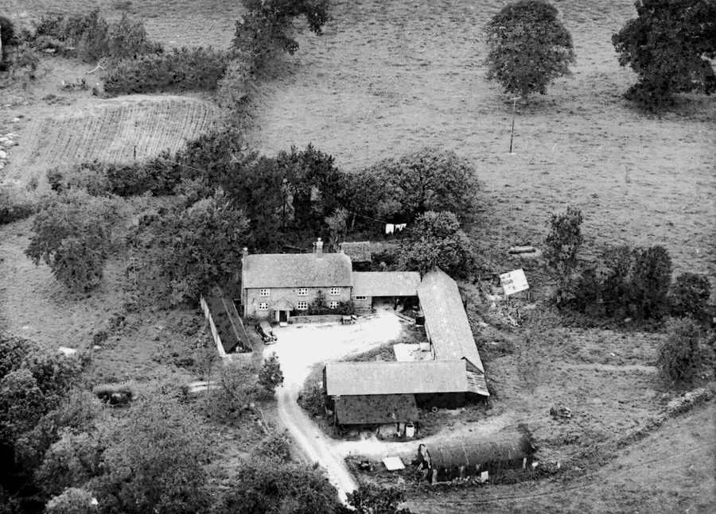
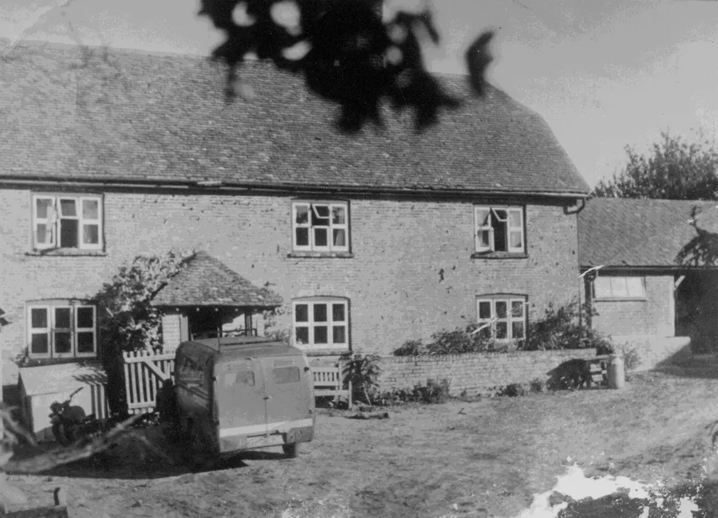
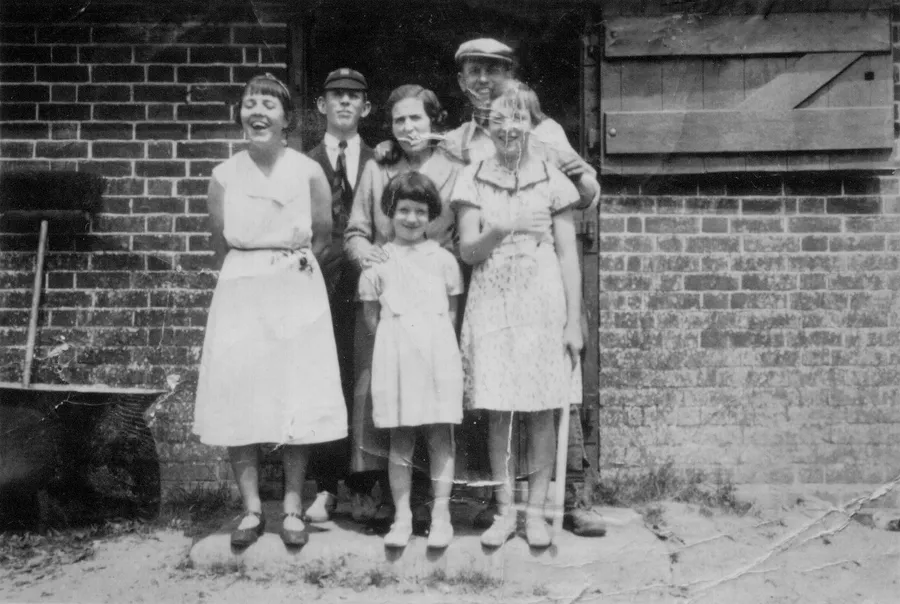
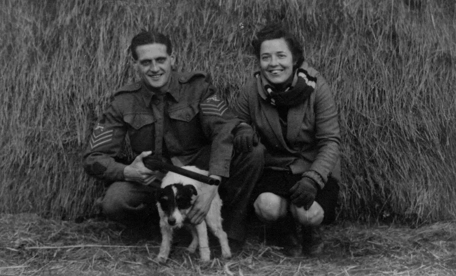
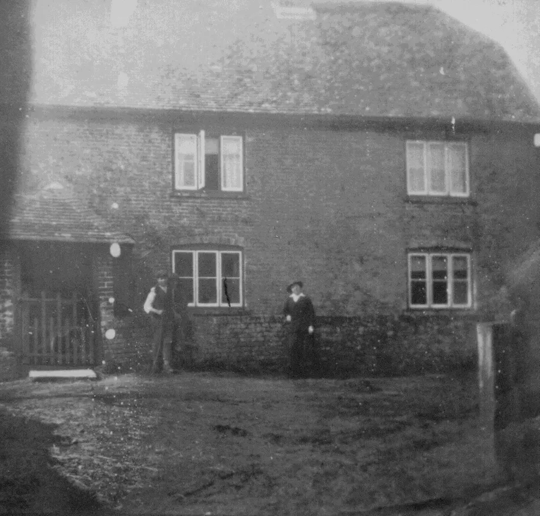

Christmas at Harts Farm
by Adrian King

Harts Farm is above Lower Daggons and the farmhouse is early to middle 17th century. The two-storey dwelling is built of brick in an irregular bond with a half-hipped tiled roof. There are two stacks with one at the left end and a twin right of centre. The 20th century porch has a hipped roof and an oak ledged door. The ground and first floors each have three casements with a centre horizontal glazing bar under segmental arches.
Internally the main ground floor room has a large open fireplace with a timber lintel. There is evidence of a bread oven. There are several exposed chamfered ceiling beams and the original roof structure still survives.
The barn is probably 18th century being situated 20 metres south of the farmhouse and is linked by a range of 19th century cow-stalls . The timber-framed walls are weather-boarded externally and are on a brick base. The roof is of corrugated iron.

The elevation facing the house has stable doors with one shuttered and the other with a part glazed, part slatted window. Both buildings are grade II listed.
James Hibberd (1800–1876) farmed there from 1840 until his death. His son Silas farmed there until he retired in 1894. Alec Butler and Ron Harris have farmed there since.
Christine Emm says that Alec and Connie Butler are responsible for a legend about a donkey that was taken upstairs and would not come down again.
Ann Hickman was born at Harts Farm and remembers the life there particularly at Christmas time. She says
“I was born in 1929 at Harts Farm in Alderholt the youngest of four children. Six years younger than my siblings and so was always 'the baby' of the family. In the 1910’s my mother had come from London as a schoolteacher. My father Alex Butler was a well-known local character.

"We all attended the local school Daggons Road C of E and then went to Grammar Schools. As I was the youngest they had all left their schools before I started at Parkstone in 1942. A small number of us caught the train from Daggons Road station to Parkstone.
"During the war the train was used by the soldiers who suffered like we did with very cold carriages and dim lights. I left home at 8.45am and came home at 6.00pm and had to cycle over a mile each way through the woods on a gravel road. Sometimes soldiers were lying in the trees but no one ever stopped me. After a cooked meal and the table was cleared I had to do my homework and then bedtime to start all over again the next day.
"We had a mixed farm with cows, horses, pigs and chicken. Some years my uncle would give my mother a few turkey chicks to rear. I remember that they were difficult to keep alive and were fed on chopped up boiled eggs mixed with 'sweethearts' which is goose grass and cleavers. We always managed to rear one for our Christmas dinner. In later years my uncle gave us a fully-grown bird.

In those days there was no electricity, so we used oil lamps and candles. The lavatory was about 100 yards down the garden. All the water for the farm and the home was pumped from the well. We only bathed once a week on a Friday night. The copper was a large iron or copper vessel built into a brick or concrete structure. It was filled with water and the fire lit underneath. We had a tin bath and as I was the youngest my turn came last.
"We only changed our clothes once a week before a woman called Mrs. Young came to do the washing on Monday. The two coppers were filled and lit, one with soap to boil the whites and the other for general use and rinsing. We had a huge mangle consisting of two large rollers connected by some menacing cog wheels which was difficult because the handle was hard to turn. Later in the week Mrs. Young came back to do the ironing. All the cooking was done over an open fire except for a Valor oil stove used for baking.
"My father had a licensed slaughterhouse so every year a pig was killed and then scolded to remove the hairs. Incidentally the same tin bath was used for this as was used for our weekly bath. Mum would salt down the meat every day for about a week. It would then go into the larder–pantry in a 'critch' until we needed some like at a Christmas. Then she would soak the ham in cold water for a day or two. It was then boiled over the kitchen fire and was always delicious. We enjoyed the fresh liver and I remember that the chitterlings were cleaned every day for two weeks before we ate them.

"My mother cooked all the vegetables over a big open fire with a bar across to hold the pans. My children still say that there was nothing better than Granny’s potatoes cooked that way. The kettle hung from a central chain with a hook which supplied all our hot water, and we had a small oil stove which we used for roasting etc. At Christmas Dad would light up the old bread oven. First a faggot of bundled pea sticks was put into the oven and lit to heat it. Then the ashes would be moved back, and the turkey would be put in. Latterly we would take the bird to the baker at Damerham by horse and cart to be cooked in the bread oven. Of course it had to be collected later in time for our Christmas Dinner.
"We had Christmas dinner at home and I remember we took a Christmas dinner to someone in Lower Daggons who lived alone. This was a practice which my family continued wherever we lived.
"In my early years we would always go to my grandparents for Christmas supper at Gold Oak Farm in Cripplestyle. Latterly we had Christmas supper at Harts Farm when the ham was enjoyed with pickle and cheese etc. It goes without saying that we had homemade Christmas pudding, cake and mince pies. Harts Farm was decorated with our own paper chains and we collected holly and mistletoe and a Christmas tree making our home a magic place for children.
"My siblings were delighted because Father Christmas visited them for many years as I was much younger than they were. I can still remember vividly the excitement when opening my Christmas stocking. It was wonderful.

"We went to church in the morning and in the evening mum or dad would play the piano and we would sing carols and play party games. We enjoyed and entertained the many visitors who came in the Christmas period.
"Although times have changed so much I feel they are not for the better. Everything has become so commercial now. Nevertheless we can continue to help and befriend people as we did back then.”
Reproduced with permission from Ann Hickman.